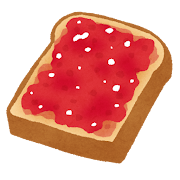
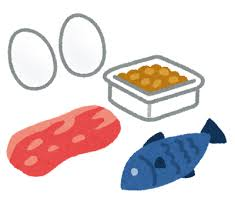
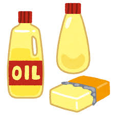
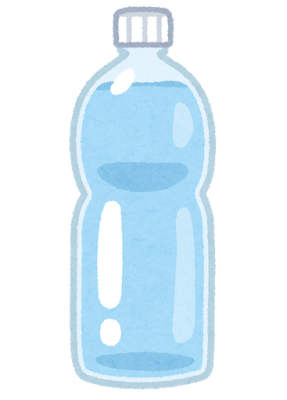
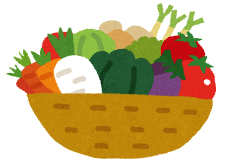
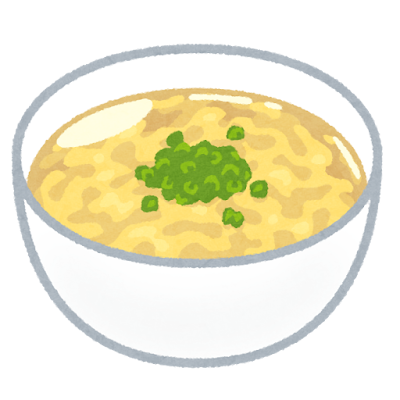

台灣外食族
早餐營養學 與 熱量控制 全攻略
打破「亂吃傷身」的惡性循環！整合初日診所、秀傳醫學、家醫門診與衛福部國健署之實務指引。

外食不是藉口，聰明搭配吃出高代謝
👉 按鍵盤 [方向鍵 ➔] 或 [空白鍵] 進入下一頁
致命盲點：「只要有吃早餐就有精神？」——錯！高精緻糖油的組合，是早晨昏睡與脂肪堆積的元兇。
- 晨間昏睡 (Food Coma)：精緻高醣引爆血糖與胰島素暴衝，2 小時內發生「反應性低血糖」，造成上午注意力渙散、狂打哈欠。
- 脂肪分解鎖死：高濃度胰島素會直接抑制脂肪水解酶，讓體內脂肪一整天無法被當作燃料。
- 隱形熱量爆卡：鐵板麵 (600 kcal)＋奶茶 (400 kcal) 單餐就吃下 1000 大卡，幾乎吃掉上班族一整天 60% 的熱量額度！

爆卡、嗜睡、還吃不飽！
 研磨破壁效應 (Milling Effect)
研磨破壁效應 (Milling Effect)
五穀粉、燕麥飲看似健康養生，但顆粒機械研磨粉碎後，表面積幾何級倍增，水與澱粉酶急速滲透水解，吸收動力學與精緻糖無異，形成晨間爆醣地雷！
 胰島素阻抗惡性循環
胰島素阻抗惡性循環
白吐司、果醬厚片造成胰臟強力分泌胰島素；若缺乏蛋白質與纖維阻擋，血糖驟升驟降將刺激飢餓素 (Ghrelin) 報復性反彈，中午食慾徹底失控。

破解之道：改吃需要咀嚼的「原片大燕麥」或「未精製地瓜」，拒絕沖泡粉！
- 空卡食物 (Empty Food)：含糖飲料（SSBs）僅提供熱量，生理上完全不具飽足感，下餐熱量毫無補償。
- 脂質新生 (DNL)：高果糖玉米糖漿（HFCS）不需經 PFK 酵素調節，直衝肝臟轉化為三酸甘油酯，每週飲用 7 次含糖飲料，高血壓風險提升 33%、肝病風險高出 56%！
- ATP 耗竭與痛風：果糖代謝大量耗盡 ATP 轉為 AMP，催化尿酸生成。
100% 果汁陷阱：葡萄汁每 100ml 含糖高達 13.1g，無纖維阻隔，甚至比汽水更容易促成脂肪肝！

大杯珍奶含糖 61.6g（超過整天上限！）
| 高危品項 | 熱量 | 隱藏陷阱剖析 |
|---|---|---|
| 鐵板麵 | 500~600 kcal | 玉米勾芡醬汁極度親脂，緊緊裹住鐵板油脂與精緻油麵。 |
| 燒餅油條 | 400~500 kcal | 燒餅包酥油，油條是多孔油炸麵糰，「純粹在吃油」。 |
| 蘿蔔糕 (2片) | 250~350 kcal | 米漿多孔性結構，煎台高溫吸油率達 20% 以上！ |
| 奶精奶茶 | 300~400 kcal | 氫化植物油＋玉米糖漿，充滿飽和脂肪與反式脂肪。 |

煎台反覆高溫催化氧化脂肪與發炎物質

蛋白質 (10~20%)建造修補組織、穩定晨間食慾。官方排序：豆 ➔ 魚 ➔ 蛋 ➔ 肉。提倡植物性黃豆蛋白為首選，避免過多動物性飽和脂肪。

脂質 (20~30%)維持神經與荷爾蒙恆定。以天然不飽和堅果種子取代精煉烹調油與人造抹醬，全脂乳品已被證實不增加心血管負擔。
醣類 (50~60%)
人體主要動能來源。強制要求至少 1/3 為未精製全穀雜糧（糙米、地瓜、燕麥、南瓜），徹底告別精緻白澱粉！
- 🥛 每天早晚一杯奶：鮮奶或無糖優酪乳 240ml，補充國人最缺乏的鈣質。
- 🍎 每餐水果拳頭大：切塊大半碗，堅持吃原型，不喝果汁。
- 🥦 菜比水果多一點：每餐約 1.5 個拳頭，1/3 必須選深綠色蔬菜。
- 🍚 飯跟蔬菜一樣多：地瓜、全麥吐司份量與蔬菜相當，以未精製為主。
- 🥩 豆魚蛋肉一掌心：手掌心大小及厚度（約茶葉蛋 1~2 顆＋無糖豆漿）。
- 🥜 堅果種子一茶匙：大拇指第一節大小（核桃 1 粒或杏仁 2 粒）。
3秒速算：在外不用電子秤，雙手就是最精準的飲食量規！
避開「混、包、夾」食物
肉羹麵、小籠包、糯米飯糰、總匯三明治將澱粉與高溫油緊密包裹，每一口都催化高升糖，徹底瓦解進食順序！
水 ➔ 肉 ➔ 菜 ➔ 飯 ➔ 果
1. 溫水喚醒腸道 ➔ 2. 蛋白質觸發 GLP-1 飽足荷爾蒙 ➔ 3. 纖維建置黏稠阻隔網 ➔ 4. 最後吃澱粉與低 GI 水果。

1. 喝水
➔

2. 優質蛋白
➔

3. 蔬菜纖維
➔

4. 未精製澱粉
➔

5. 拳頭水果
 便利商店 500 kcal 黃金盤
便利商店 500 kcal 黃金盤
- 優質蛋白 (20g+)：茶葉蛋 1~2 顆 ＋ 統一陽光無糖高纖豆漿 (0.6g糖/100ml)。
- 原型澱粉：現烤地瓜半條 (約 80g，拳頭大)。
- 豐富纖維：日式和風蔬菜沙拉盒（醬汁僅沾取 1/3）。

傳統豆漿店無油生存法- 堅定基底：大杯無糖清漿（含 15g 豐富植物大豆蛋白）。
- 蛋白質升級：雙份蔥花蛋（請店家少油少鹽）。
- 避坑鐵律：徹底放生油條、米漿與水煎包；若點燒餅，改夾蔥蛋生菜。